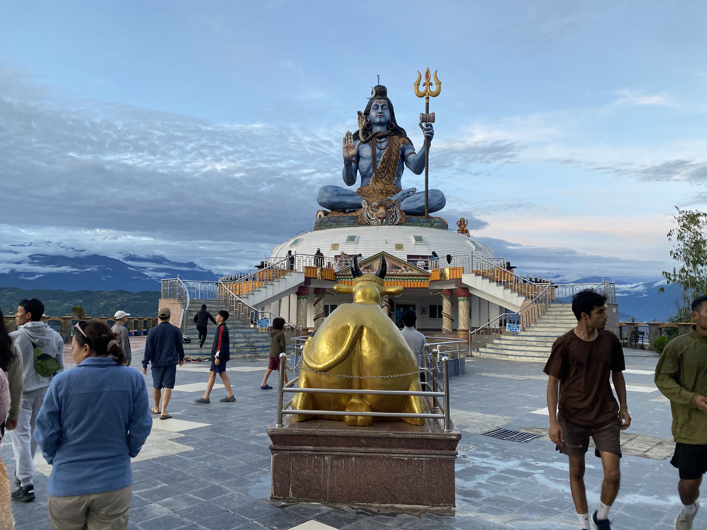
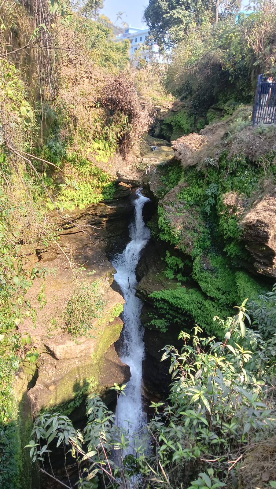
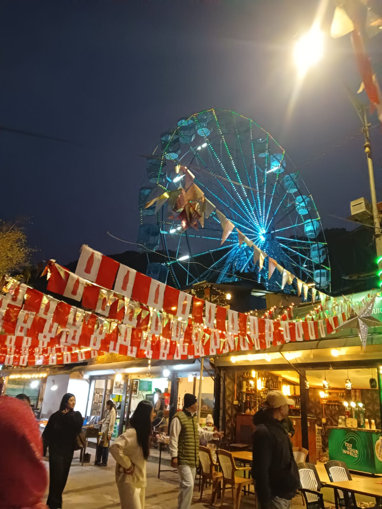
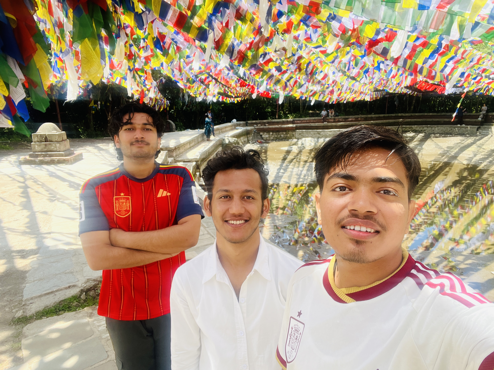
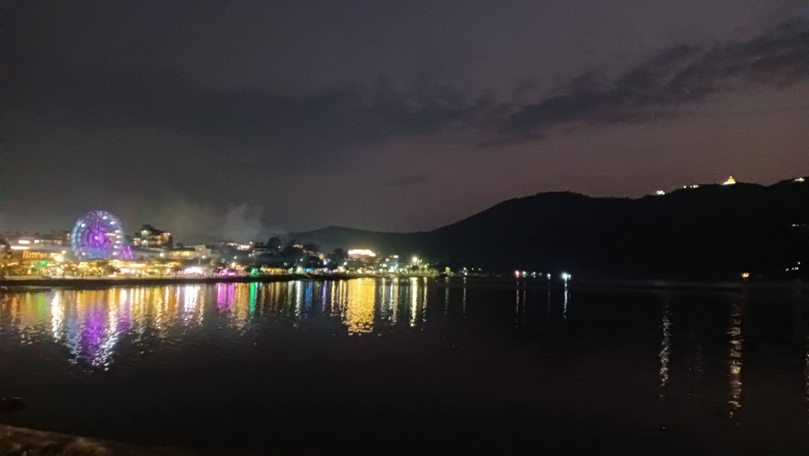
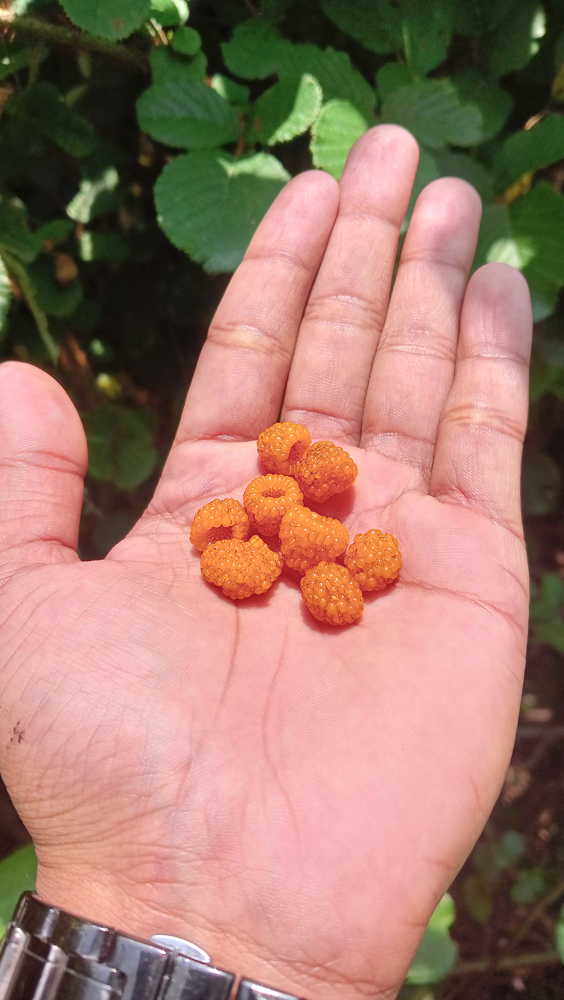
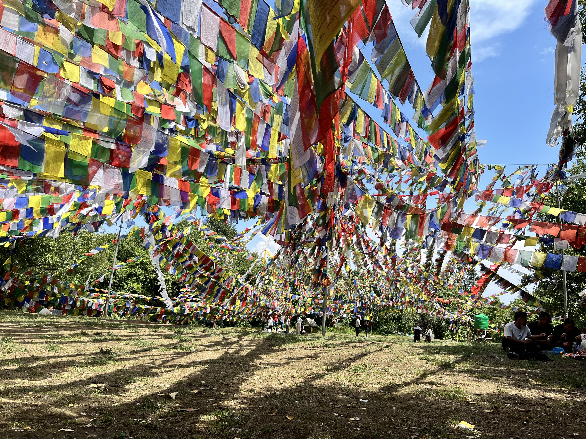

Exploring the Valley of the Shadow of Annapurna.
I had never been to Pokhara before, so this was my first visit. I got the chance to travel with my Sano Mummy, Sano Buwa, and my brother, who had recently returned from Australia and wanted to take the family on a trip. I was also invited to join them, which made me very happy. The trip was even more special because it was my first time traveling by airplane. On January 21, 2026, we traveled from Chandrauta to Butwal and then to Bhairahawa to catch our flight. Our flight was delayed by almost two and a half hours, but after a 35-minute flight, we finally arrived in Pokhara. As soon as I stepped out of the airport, I felt the cool breeze and saw the beautiful mountains in the distance. For a moment, I couldn't take my eyes off them. That evening, we explored Lakeside, enjoyed boating on the lake, and had dinner at a nice restaurant before ending the day. The next day, we booked a taxi and visited Pumdikot, International Mountain Museum, Mahendra Cave, and Davis Falls. We also went to Begnas and enjoyed fresh fish for lunch. Since we were unable to visit temples at that time, we couldn't explore some of the places we had planned. Most of the remaining attractions were temples, so we decided to return home that same day. We traveled back by bus at night and finally reached home at around 2 AM. Though it was a short trip, my first visit to Pokhara and my first flight made it a memorable experience that I will always cherish.
Lake Baseline
There was something peaceful about sitting by the lake and doing nothing at all. The cool breeze, the sound of water, and the mountains in the distance made me wish the evening would last a little longer.
First View of Phewa Lake
The moment I reached Lakeside, I felt a different kind of peace. The lake was calm, the air was cool, and the mountains quietly stood in the distance.
It was my first time in Pokhara, and everything felt new to me. Sitting by the lake and watching the boats move slowly across the water is one of the moments I will always remember.

Pumdikot
At nearly 1,500 meters above sea level, Pumdikot gave me one of the most beautiful views of my trip. For the very first time, I saw mountains this closely—Mt. Machhapuchhre (Fishtail), Annapurna South, and Hiunchuli standing proudly above the Pokhara Valley. From the viewpoint, I could see the city below, a few lakes shimmering in the distance, and colorful paragliders floating peacefully across the sky. Standing there with the cool mountain breeze around me, I simply paused and admired the view. It was one of those moments that quietly stays with you long after the journey ends.
David falls
Watching the water disappear beneath the rocks was fascinating. It reminded me that nature doesn't have to be loud to leave an impression.

Lakeside Walk
My favorite part of Lakeside wasn't the view—it was simply walking without any destination. The lights, the people, and the calm atmosphere made the evening feel special.

Exploring Pokhara
Pokhara gave me many firsts in just two days. From walking through the International Mountain Museum and witnessing the power of Davis Falls to enjoying fresh fish near Begnas Lake, every place had something memorable to offer.
I found myself slowing down and appreciating the little moments—a quiet walk by the lake, the cool mountain air, and the joy of seeing a new place for the very first time. Though the trip was short, Pokhara left me with memories that will stay with me for a long time.

Vantage
A short journey, countless memories, and my very first experience of seeing Pokhara beyond photographs.

“Some sunsets end the day. Others become the memory.”
Trail Check / 01
Damp soil, rich canopy cover, early moisture.
Starting the Trail
The damp earth of the lower woods cushions each step. Leaving the road behind, the air cools instantly under a canopy of oak and rhododendron leaves.
Trail Check / 02
Deep interior trail fragments, minimal sunlight breaks.
Following the Forest Path
The forest thickens here. The only trackable sound is the wind overhead and the occasional chatter of local birdlife deep in the brush.

Trail Check / 03
Ridge clearing facing back down to southern valley slopes.
Unexpected Openings
Emerging from dense trees, the horizon opens wildly. Terraced farms slope down toward the valley haze, showing a rustic way of living clinging to the steep hillsides.

Frame A / Detail
Lichens and heavy moss layer strings along ancient bark pathways.
Frame B / Light Shift
Mid-afternoon temperature drop as low clouds settle in.
Frame C / Canopy
Rhododendron fields showing bare trunks outside spring bloom frames.

Frame D / Descent
Stair layouts dropping sharply along western boundary elements.
Summit Note / Altitude
The high clearing where the water preserves mirror elements of the tree walls perfectly.
Reaching Manichud Daha
The water of the high pond sits undisturbed, enclosed safely by trees and holy shrines. Sitting on the edge, the physical weight of the climb gives way to absolute clarity.
What This Hike Taught Me
The mountain does not yield to your schedule. Walking through Shivapuri confirms that the best arrivals aren't rushed; they are earned step by deliberate step through the trees.
“The best views arrive after the hardest climbs.”